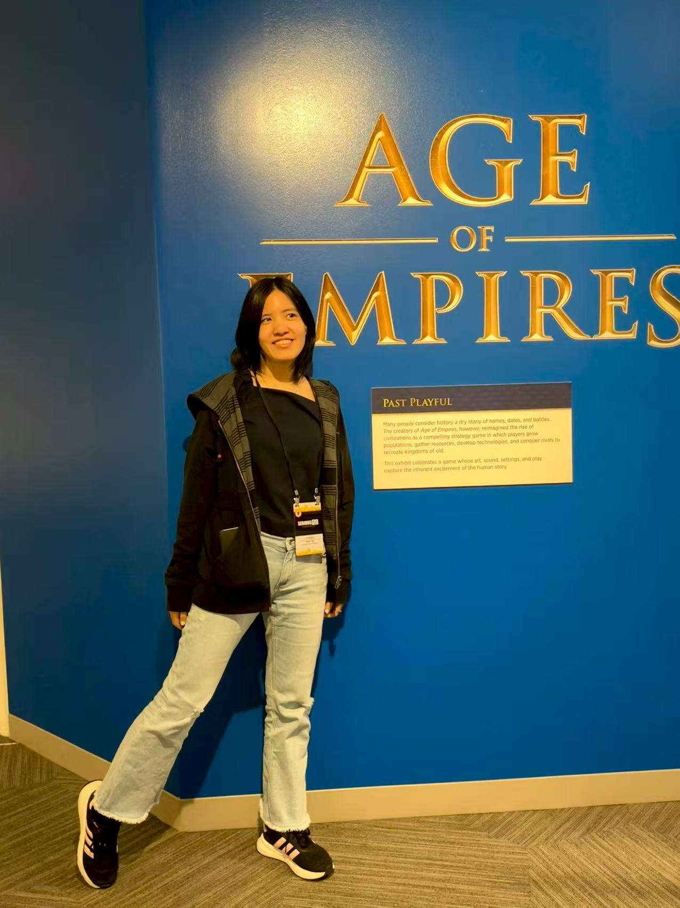

I'm a game and interactive experience designer who is happiest when the answer is not obvious yet.
A lot of my work begins with an unfamiliar medium or a difficult design question. I've explored four phones as one shared game space, haptics as part of emotional storytelling, interaction design for a 270-degree immersive environment, and games that help players practice metacognitive awareness. I like understanding why existing conventions work, deciding which assumptions are worth keeping, and testing what happens when we push beyond them.
My technical foundation gives me a lot of freedom in that process. I hold a BS in Applied and Computational Mathematical Sciences, focused on Discrete Math and Algorithms, from the University of Washington. I am comfortable learning new tools and systems as a project demands them, whether that means an engine workflow, hardware platform, scripting system, research method, or production pipeline.
My minor in Dance trained a different muscle: timing, embodiment, emotion, and attention to how an experience feels. Together, those backgrounds make me comfortable moving between systems thinking and player experience, technical constraints and creative goals.
I also care deeply about the why behind a design. I tend to ask what a player needs to perceive, feel, or understand before deciding what a mechanic should be. Prototypes and playtests keep that thinking grounded: I like turning a difficult question into something testable, seeing where my assumptions break, and using that evidence to decide what to build next.
I'm currently a graduate student at Carnegie Mellon University's Entertainment Technology Center, working across game design, technical design, narrative, art, engineering, research, and production. My interests tend to cross disciplines, and I've learned to treat that range as a design tool.
I like learning why something is done the usual way—and then deciding deliberately whether it should stay that way. For me, conventions are useful starting points, not rules. I want to understand what they solve, what they hide, and whether a different interaction can serve the player better.
That usually means learning quickly. My technical background helps me get productive in unfamiliar systems, but I do not learn tools for their own sake. I learn whatever the design problem requires, build enough to make the idea tangible, and use that prototype to get better information.
I am especially drawn to work where technical possibility, creative intent, and player experience all have to be considered at once. Those are the problems where research, prototyping, implementation, and collaboration stop feeling like separate disciplines and become one design process.
I also want the work to matter. That can mean creating a memorable emotional experience, giving players a new way to think, opening up a new form of shared play, or making a difficult platform easier for other creators to use.
Outside of project work, I keep coming back to music, movement, and stories:
Crafting playlists based on instrumentation and emotional narrative, or for a particular friend or a specific activity.
I sing musical, bel canto, and contemporary styles. I care about healthy vocal technique, clear diction, and emotional expression.
The dance minor from UW taught me about embodied movement as a living art form and field of study. I try to explore different styles, but I'm most drawn to contemporary and ballet. I also enjoy improvisation and collaborating with others to create movement pieces.
Reading was a huge part of my life growing up, and I still love getting lost in fiction and non-fiction alike. See my reading list →